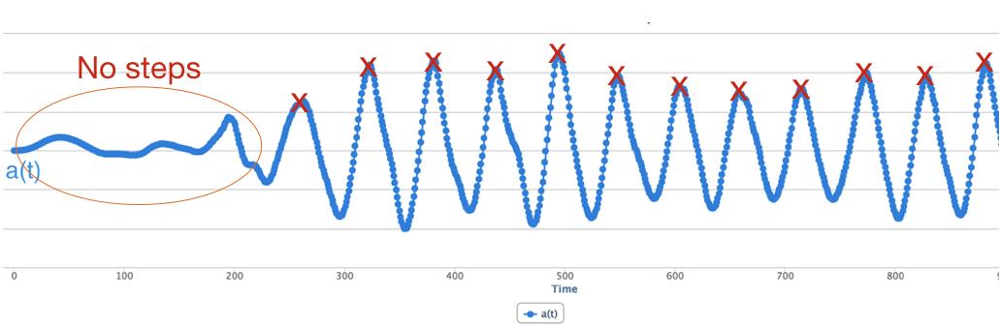
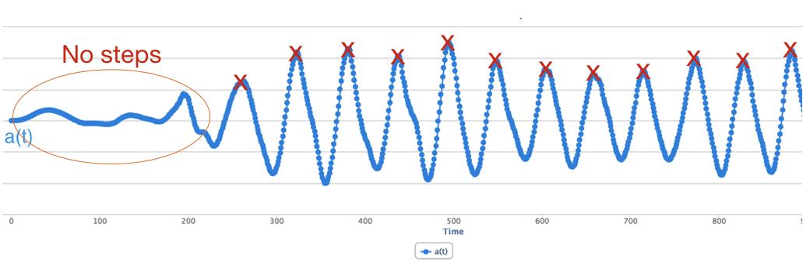
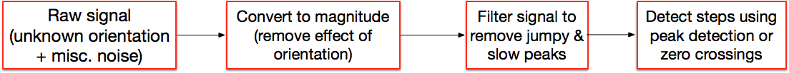
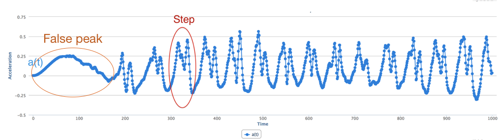
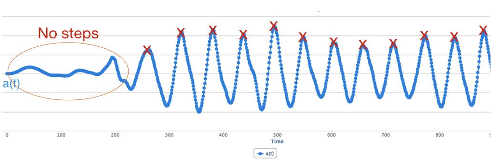

find_peaks Function
There are many different ways that we can design a step detection algorithm. We outline one such method in this section. The key insight in our method is to convert the 3-axis signal into a one axis magnitude signal, and then extract steps from this signal.

Figure 5: Step Detection Algorithm
Step 1: Extract signal magnitude: In the previously described algorithm, we selected the axis along which maximum acceleration occurred and focused on that one. Here, we are just going to take the magnitude of the entire acceleration vector i.e.
, where x, y, and z are the readings of the accelerometer along the three axes.

Figure 6: Example showing sources of noise in magnitude signal
Step 2: Filter the signal to remove noise: The second step is to remove noise, and extract the specific signal corresponding to walking. Before we perform this step, we need to know what are the sources of noise. There are several sources of noise that we need to filter out (shown in Figure 6):
To remove these sources of noise, we are going to use frequency-domain noise removal. Notice that we need to remove high frequency variations like jumpy peaks and low frequency variations like slow peaks. A simple solution is to use a filter that keeps only frequencies relating to walking and removes the rest. For example, we know that typical walking pace may be under three steps a second (3 Hz) and over half step a second (0.5Hz), so perhaps we remove all frequencies above 5 Hz and below 0.5 Hz (just to give some margin for error). Note that this method would not be able to detect running or bicycling, which may have higher pace.
Even after we remove low and high frequency peaks, we may be left with some short peaks. A simple way to deal with this is to look only for large peaks and ignore small peaks.

Figure 7: Zero crossings (left) and peaks (right) of the filtered magnitude signal
Step 3: Detecting Steps. Once you have the smoothed data, let us consider how to detect the step. There are many approaches to do this. We could do what was suggested earlier, which is to look for large peaks and use that to detect steps. Another approach is to take the derivative (slope) of the smoothed acceleration signal. The derivative changes from negative to positive (or positive to negative) exactly when a step occurs, so you can just count the number of times the derivative changed from negative to positive to detect the number of steps that occurred. Another possibility is to subtract the mean for each window and look at zero crossings i.e. times when the signal crosses from the negative to positive in the upward direction (this can be tricky, however, since the signal baseline can change over time as shown below).
We will focus on detecting peaks using Python and tuning parameters to make it work effectively.
Step counting, at its core, is about detecting repeating patterns or peaks in acceleration data that correspond to an individual’s steps. In Python, the scipy library provides the find_peaks function that serves precisely this purpose, allowing us to detect peaks in our dataset easily.
find_peaks FunctionThe find_peaks function from the scipy.signal module is designed for pinpointing the indices of relative maxima (peaks) in a 1D array. Its standard usage is:
from scipy.signal import find_peaks
peaks, properties = find_peaks(data_array, height=ht, prominence=prom, distance=dist, width=wid)
For this function:
data_array is the time-series dataset where we aim to detect peaks.height serves as a threshold that peaks must surpass for detection.prominence designates how elevated a peak is in relation to its neighbors, emphasizing the peak’s relative prominence.distance is the minimum horizontal separation (in data points) expected between peaks.width refers to the width of the peaks at half-prominence.Note that for the assignment, we primarily ask you to work with distance rather than the other parameters.
For our step counting scenario:
peaks, _ = find_peaks(df['accel_mag'], height=ht, prominence=prom, distance=dist, width=wid)
num_steps = len(peaks)
Here, we’re looking for peaks in the accel_mag column of our DataFrame, which symbolizes the magnitude of acceleration data. By counting these peaks, we get an estimate of the steps taken. However, without careful parameter tuning, this estimate can differ significantly from the true value.
Height: This threshold ensures only peaks exceeding a certain value are detected, helping to filter out minor fluctuations and zeroing in on significant movements.
Prominence: Useful in discerning genuine peaks from mere noise. A heightened prominence value ensures only peaks distinctly pronounced from their surroundings are identified. This precision is important for sidestepping minor data disturbances being misconceived as steps.
Distance: Crucial for step detection, the distance parameter corresponds to our understanding of the time lapse between two successive steps. For example, during regular walking, we usually register 1-2 steps every second. Adjusting the distance parameter helps in preventing the recognition of multiple peaks within a single step’s duration.
Width: The width parameter captures the full width of a peak at its half-prominence. This becomes particularly relevant in discerning between short spikes (possibly noise or artifacts) and genuine peaks of activity, like steps. In our context, width can reflect the typical duration of a step, and filtering peaks based on this duration can improve accuracy.
Sampling rate, denoted as the number of samples gathered each second, is a cornerstone in peak detection. Given our earlier example of a 1-2 step walking rate:
Clearly, the optimal values for parameters, especially distance and width, will vary with the sampling rate. Thus, when adjusting these parameters for find_peaks, it’s crucial to keep the sampling rate of your data in mind to ensure precise peak (step) detection.
This notebook shows a step counter using find_peaks and applies it to a number of sample sensor logs. The different logs correspond to different sensor placements (left pocket, right pocket, wrist), and to different walking patterns (e.g. with delays between short burst of steps). The notebook shows how tweaking the prominence and width parameters can allow you to fine-tune the performance of the step counter.